SAGANO BLOG
2024年04月10日
Last school year, 8 students from Sagano High School traveled to Florida in January. Sagano High School and Jupiter High School have had an exchange program since 2015. From 2021 to 2023, it was impossible to travel to Florida, but we maintained our relationship online. Finally, this January, we could return to Florida for our 2-week exchange program on environmental and cultural studies. After returning to Japan, the participants began to formulate their ideas for a presentation on what they experienced, what they learned, and what ideas they wished they could see used here in Japan and in Kyoto. Here is a description of the full Florida exchange program for 2024!
2024年1月4日から17日までの2週間本校生徒が米国フロリダ州にあるジュピター高校を訪問する短期研修を実施しました。ジュピター高校環境学コースの皆さんとは嵯峨野高校の連携校として2015年から交流事業を実施しています。2021年から2023年の期間はコロナ禍により対面による交流はできませんでしたが、オンラインで関係を維持してきました。コロナが5類扱いとなり、ある程度海外への往来ができるようになり、対面による交流を再開することができました。
この2週間の研修で、生徒たちは同コースの生徒の家にホームステイし、ジュピター高校の授業の受講やフィールドワーク等の経験を通して、英語でのコミュニケーション能力の向上はもちろんのこと、異文化と環境学についての理解を深め、批判的・論理的思考力、判断力そして共感力を養うことができました。日本に帰国後、参加者は自分たちが体験したことや学んだことを振り返り、環境問題に関する自らの行動変容を京大環境学堂の皆さんに発表しました。
{kind=link}
【写真】参加した高校2年生8名とマイアミ総領事館広報文化担当官（上段右端）
ジュピター高校環境学コース理科教員（上段左端）及び嵯峨野高校引率教員（下段）
以下、研修内容について詳しく報告します。
Pre-Trip Preparations - 出発前の結団式
Before leaving, the students met with the principal, who encouraged them to learn as much as possible and to investigate many research questions.
出発前の結団式では、研修で様々なことに挑戦する決意を代表生徒が表明し、校長先生からは、各自が設定した問いについての自分なりの答えを見つけるべく多くを学んでくるように励ましの言葉がありました。
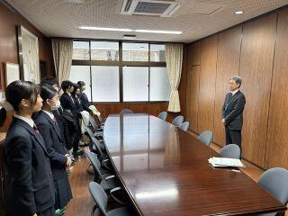
Arrival and Initial Days - 1月4日～7日
January 4th-7th: On January 4th, the students were warmly received by their homestay families at the airport. The following days were spent enjoying free days with their homestay families, acclimating to the environment. We also met up together at the Jupiter Lighthouse, a symbol of the town of Jupiter, to learn about the history of the town.
約16時間のフライトの後フロリダ州ウエストパームビーチ空港に到着した生徒たちは、ホストファミリーに温かく迎えられました。最初の週末を一緒に過ごしながら、時差ぼけを克服して体調を整え、現地の気候や環境に慣れました。希望者には、ジュピターの町の象徴であるジュピター灯台で町の歴史について学ぶ機会もありました。
 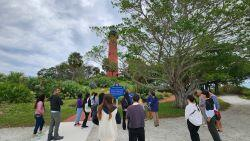
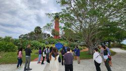
Educational Activities and Experiences 研修内容
January 8th: The group visited the Morikami Museum and Japanese Gardens, where they presented on Japanese nature and culture to the staff and docents, followed by a tour of the gardens, appreciating the American interest in Japanese culture.
1月8日：南フロリダにある森上博物館と日本庭園を訪問しました。職員とそこで働くボランティアガイドの方々に日本の自然と文化について発表をした後、現地の植物の生態系を考慮しながら造られた日本庭園を庭師の方（アメリカの方）に案内していただきました。ここではアメリカの人々の日本文化への関心の高さを知りました。私たちの訪問について、地元のメディアの取材を受けました。
https://www.northpalmbeachlife.com/blogs/morikami-hosts-japanese-students
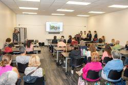
January 9th: They visited Jupiter High School, got their student IDs, met the teachers. They enjoyed a lecture from Ms. Jennifer Smith, an Environmental Scientist, and two other scientists from the South Florida Water Management District, learning about wildlife protection and business-community cooperation. And they had lunch with the lead teachers of the Jupiter Environmental Research and Field Studies Academy (JERFSA)and the principal of Jupiter High School. In the afternoon, they attended a lab class in a wetland ecosystem with JERFSA students and teachers.
1月9日：ジュピター高校登校初日。生徒証明書を受け取って校内に入り、先ずは図書館兼情報センターへと案内されました。そこで、南フロリダ水管理地区の環境専門家、ジェニファー・スミス氏からの講義を受け、野生生物保護に関しての官民の協力について学びました。ジュピター高校の校長先生と環境学コース（JERFSA）長をしている先生との合同主催の昼食会に招待していただきました。午後は環境コースの生徒と湿地の生態系と水質調査に関する実習授業に参加しました。
 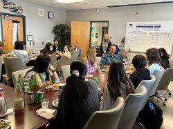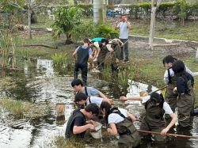
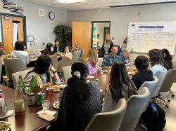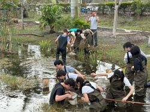
January 10th: They again went to Jupiter High School and had a tour of the expansive school campus. In the afternoon, they did presentations on Japanese nature and culture for the 11th and 12th-grade students of JERFSA.
1月10日：ジュピター高校登校２日目。午前中は広大な校舎を見学しました。午後は、JERFSAの11年生と12年生（日本の高校1年と2年に対応）向けに、日本の自然環境と文化についてプレゼンテーションを行いました。
 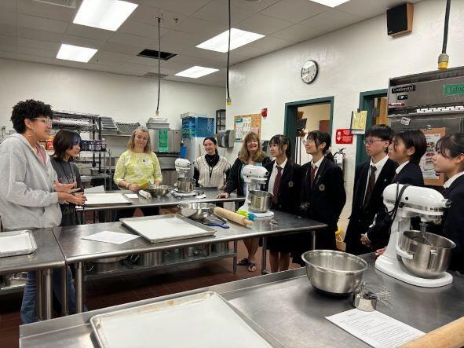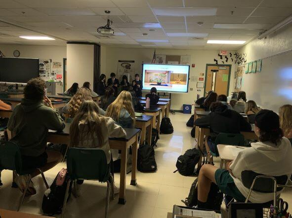
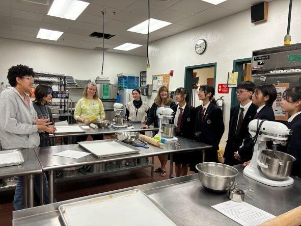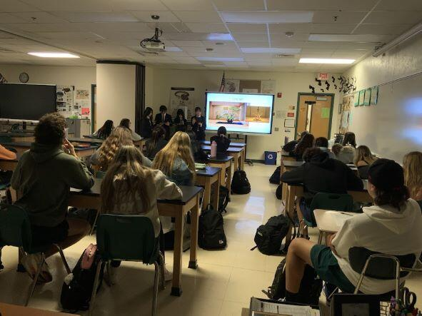
January 11th: They again went to Jupiter High School and attended classes with their homestay siblings.
1月11日：ジュピター高校登校3日目。ホストバディと一緒に様々な教科の授業に出席しました。
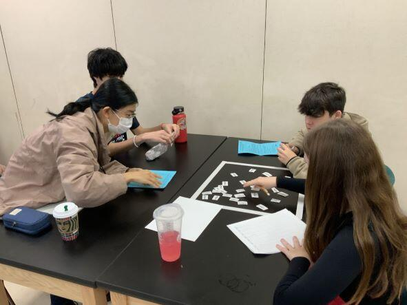
January 12th: The group traveled to Everglades National Park, a UNESCO World Heritage and Biosphere Reserve Site, to study native ecosystems and human impacts on them.
1月12日：ジュピター高校環境学コースの生徒と一緒に、ユネスコ世界自然遺産に指定されているエバーグレーズ国立公園および生物圏保護区のフィールドワークに参加しました。そこでの生態系にや在来種へ人間が与えている影響について学びました。
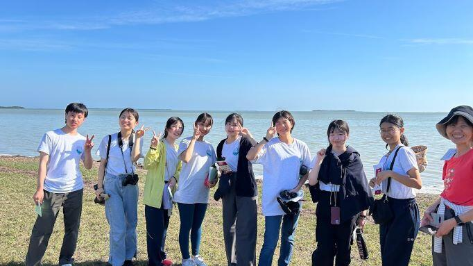
January 13th-15th: The weekend and the American holiday on Monday (Dr. Martin Luther King Jr. Day) were spent with the homestay families. The final event was an amazing farewell party with all the teachers and families. They had a great time!
1月13日～15日：この週末と月曜日（マーティン・ルーサー・キング・ジュニア・デーという祝日）は、ホストファミリーと一緒に過ごしました。希望者には、環境学の専門家によって地元の生態系についての観察ツアーが開催されました。最後は、この研修に参加したホストファミリーの方々が、フェアウェルパーティーを企画してくださいました。参加生徒たちはここでの経験を振り返りながら、ホストファミリーたちと素敵な時間を過ごしました。
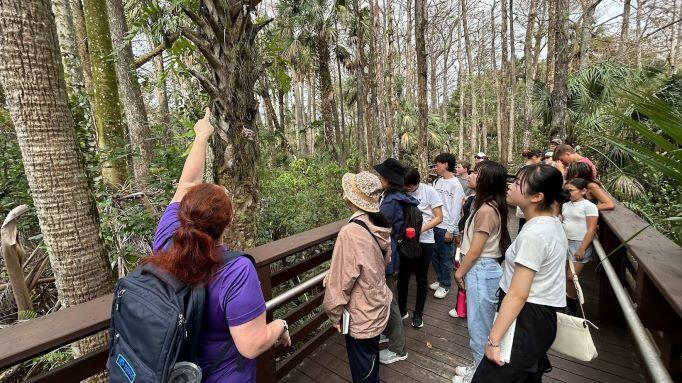
Cultural Exchange and Daily Life - 文化交流と日常生活
Throughout their stay, students lived with American families, gaining insights into the U.S. education system and daily life, enriching the cultural exchange experience.
滞在中、生徒たちはジュピター高校の生徒の家族と日常生活を共にし、様々な異文化体験を積むことができました。ジュピター高校に通うことで、米国の教育制度や教育内容についても理解を深めることができました。
Conclusion of the Trip - 帰国
On the morning of January 16th, the students departed for Kyoto, reflecting on their enriching and educational experience in Florida. Heartfelt thanks were extended to Jupiter High School's teachers, lecturers, and homestay families.
Post-Trip Activities and Achievements - 事後研修
Upon their return, the students prepared for a face-to-face presentation at Kyoto University, sharing the outcomes of their trip and proposing future initiatives for Japan and Kyoto. This event, held at the Laboratory of Regional Planning in the Graduate School of Global Environmental Studies (LRP-GES), was a success, with valuable feedback from professors and graduate students.
帰国後、生徒たちはこの研修を振り返り、自分たちの行動はどのように変容したかについてまとめ、京都大学大学院地球環境学堂地域資源計画論研究室の教授や大学院生にプレゼンテーションをしました。参加してくださった皆さんから多面的なフィードバックをいただき、学びをさらに進めることができました。
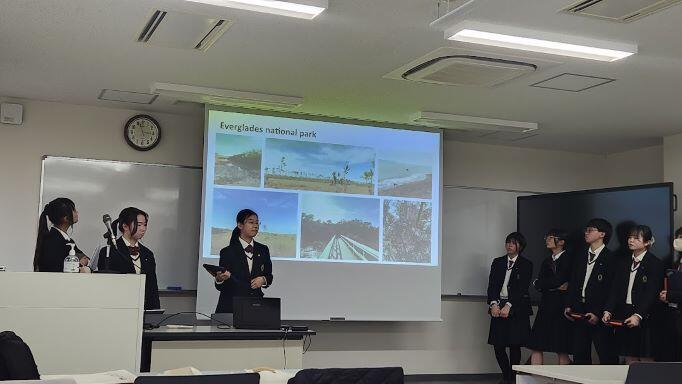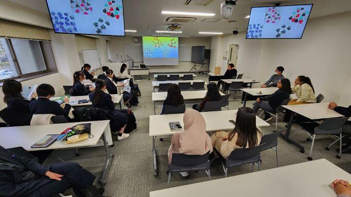
The Sagano High School students' global presentation is featured on the LRP-GES blog
この日の様子は京都大学大学院環境学堂地域資源計画論研究室のブログでも紹介されています。//lrp.ges.kyoto-u.ac.jp/archives/3739
Thanks to everyone involved with the Sagano High School Florida Program, 2024 was a successful year!
嵯峨野高校フロリダ短期研修を実施するにあたり、多方面から様々な御支援、御協力をいただきました。お陰様で貴重な学びと成長の機会を実現することができました。今回参加した生徒たちは、グローバルリーダーの一人として、周囲に良い影響を与え続けてくれると信じています。本当にありがとうございました。
〒616-8226
京都市右京区常盤段ノ上町15番地
TEL 075-871-0723 FAX 075-871-0724
E-mail [email protected]
Copyright (C) 京都府立嵯峨野高等学校 All Rights Reserved.